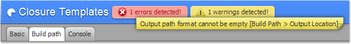
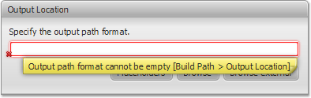
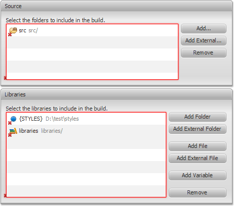

Error Manager
Closure FX Builder provides the Error Manager to manage Build
Configuration problems. The problems are displayed in the Header of
the Templates page and shown immediately after the editing with no
need to run the Compiler.
There are to types of problems:
Warnings and Errors.
Warnings
can be leaved as unresolved, so the Compiler will run correctly.
Errors should be resolved, otherwise the
Compiler will not be launched.
- Create a new configuration. Notice the following warnings
and errors in the Header of the Templates page.
- Hover one of the labels to explore all issued problems.
The message in the shown tooltip specifies the problem and the
path where the problem is appeared.
For example: Output File cannot be empty [Build Path >
Output Location]

- Go to the Build Path tab.
Notice that textfields of the Output Location section are marked
as invalid.
Hover one of the textfields to see the
message.

Build Path Validation
Closure FX Builder performs validation of the configured Build Path
such as existence of sources and libraries. All invalid items is
marked by red cross.
